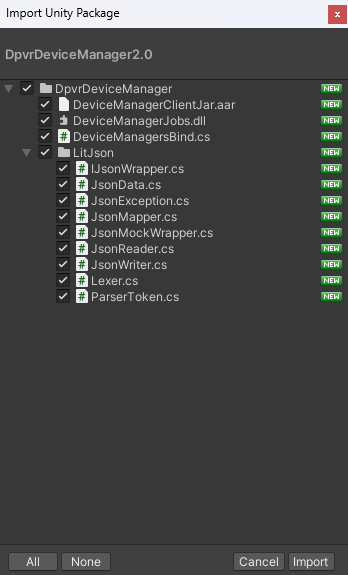
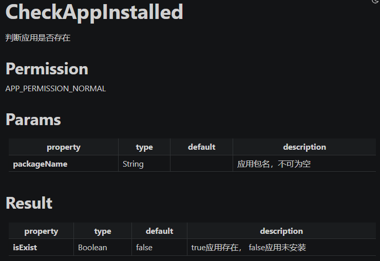

使用流程#
在项目中导入DeviceManagerService unitypackage文件。
申明应用DeviceManager权限。
绑定DeviceManagerService。
实现IDeviceManagerResultListener用于监听Api调用结果，实现IDeviceManagerEventListener用于注册事件监听。
进行DeviceManagerService API调用。
进行API调用结果的处理。
进行事件(Event)的处理。
0. unitypackage 导入#
点击这里下载unitypackage文件， 打开unity项目，选择 Assets->Import Package->Custom Package。选中下载好的unitypackage后导入。。

1. 权限申明#
DpvrDeviceManagerService每个接口都需要指定的权限才能进行调用。
在本文档的Api部分，会标注每一个接口需要的具体权限。
DpvrDeviceManagerService的权限分为4种：
权限级别 |
需要授权 |
权限说明 |
|---|---|---|
NORMAL(0) |
否 |
普通权限 |
LAUNCHER(1) |
是 |
常用的Launcher权限，可以获取系统设置 |
SYSTEM(2) |
是 |
常用的系统权限，可以更改一些系统设置 |
ADMIN(3) |
是 |
最高权限，可以调用全部接口 |
DeviceManagerService的调用者需要在自己的应用AndroidManifest.xml的Application标签加入下列授权信息，来获得DeviceManangerService的授权。
对于应用版本的授权：
<meta-data android:name="DeviceManagerKey" android:value="YOUR_KEY_HERE"></meta-data>
使用这种方式授权，将会对当前应用包名和版本号进行授权，该版本该应用可以运行于所有支持DeviceManangerService的设备上。
对于指定渠道固件授权:
<meta-data android:name="DeviceManagerPlatformKey" android:value="YOUR_KEY_HERE"></meta-data>
使用这种方式授权，将会对应用包名在指定定制渠道固件上进行授权，而不对版本号进行校验。
当两种授权方式同时存在时，会在对应系统上使用能获得的最高权限。
目前，你需要通过联系DPVR的技术支持来获取NORMAL以上权限的DeviceManagerKey。
2. 绑定DeviceManagerSerivce#
跟标准AIDL调用一样，首先我们需要绑定DeviceManagerSerice。
public static void Bind()
{
AndroidJavaClass jc = new AndroidJavaClass(unityPlayerClass);
AndroidJavaObject activity = jc.GetStatic<AndroidJavaObject>("currentActivity");
deviceManager = new AndroidJavaObject("com.dpvr.devicemanagerclientjar.DeviceManagerBindMan", activity);
SetCallbacks();
deviceManager.Call("SetBind");
}
3. 注册API调用回调和Event回调。#
实现DeviceManagerBindMan$OnDeviceManagerResult，DeviceManagerBindMan$OnDeviceManagerEventResult用于处理Api调用回调。
private static void OnResult(int jobId, string result)
{
Debug.LogFormat("onResult: {0} {1}", jobId, result);
}
private static void OnEvent(string eventType,string eventInfo)
{
Debug.LogFormat("onEvent: {0} {1}", eventType, eventInfo);
}
public delegate void OnDeviceManagerResult(int id, string result);
public class OnDeviceManagerResultListener : AndroidJavaProxy
{
OnDeviceManagerResult _handler;
public OnDeviceManagerResultListener(OnDeviceManagerResult handler) : base("com.dpvr.devicemanagerclientjar.DeviceManagerBindMan$OnDeviceManagerResult")
{
_handler = handler;
}
void OnDeviceManager(int id, string result)
{
_handler(id, result);
}
}
public delegate void OnDeviceManagerEvent(string eventType, string eventInfo);
public class OnDeviceManagerEventListener : AndroidJavaProxy
{
OnDeviceManagerEvent _handler;
public OnDeviceManagerEventListener(OnDeviceManagerEvent handler) : base("com.dpvr.devicemanagerclientjar.DeviceManagerBindMan$OnDeviceManagerEventResult")
{
_handler = handler;
}
void OnDeviceManagerEvent(string eventType, string eventInfo)
{
_handler(eventType, eventInfo);
}
}
public static void SetCallbacks()
{
deviceManager.Call("SetDeviceManagerResultListener", new OnDeviceManagerResultListener(OnResult));
deviceManager.Call("SetDeviceManagerEventListener", new OnDeviceManagerEventListener(OnEvent));
}
需要注意的是，每一个应用仅可以注册一个有效的ResultListener和EventListener。
4. 进行Api调用。#
通过调用接口call来实现DeviceManager业务API的调用。
String call(String jobCat, String jobType, String jobParams, String callParams) throws RemoteException;
参数定义如下：
jobCat |
需要调用的Api分类，对应Api文档内的1级内容，例如”activityJobs” |
jobType |
调用的具体Api，例如”GetRunningPackages” |
jobParams |
调用的业务Api参数，可以通过对应Api文档中的Params获取，需要对该参数进行Json序列化，可为空。 |
callParams |
调用该Api时的调用参数，例如延迟调用、或者该接口需要依赖于另一个Api调用的完成，可为空。 |
该接口的返回值是：
class CallResult {
/** 当调用出错时，用于表示错误的原因 */
var errorDescription: String? = null
/** 该次任务调用的任务ID,与ResultListener中的jobID对应，当jobId<0时表示调用失败 */
var jobID: Int = 0
}
的序列化Json字符串。
以 packageJobs/CheckAppInstalled 为例,我们来看一下如何调用DeviceManagerService接口。
该Api的文档说明如下：

通过Api文档知道，可知接口的jobCat是
packageJobs，jobType是CheckAppInstalled。它的Api调用参数是一个String类型
pacageName。它的调用结果只有一个
isExist属性。
因此，我们可以这样进行接口调用，来进行对于 com.dpvr.devicemanager 是否安装的检测：
private int checkIsAppInstalledJobId = 0;
public void CheckIsAppInstalled()
{
string jobCat = "packageJobs";
string jobType = "CheckAppInstalled";
string jobParams = "{\"packageName\":\"com.dvpr.devicemanager\"}";
string callParama = "{\"delay\":2000}";
string ret = deviceManager.Call<string>("CallInterface", jobCat, jobType, jobParams, callParams);
JsonData result = JsonMapper.ToObject(ret);
if (result["jobID"] < 0)
{
Debug.LogFormat("Job error, for reason {0}", result["errorDescription"];
} else {
checkIsAppInstalledJobId = result["jobID"];
}
}
在这里，我们对于CallResult进行了解析，并将该任务的id放在了checkIsAppInstalledJobId中,当调用出错时，我们打印它的原因。
5. 处理Api调用结果。#
由于DeviceManagerService API都是异步调用，因此，在异步完成后，会触发在DeviceManagerSerice中注册``DeviceManagerBindMan$OnDeviceManagerResult``的接口:
private static void OnResult(int jobId, string result)
{
Debug.LogFormat("onResult: {0} {1}", jobId, result);
}
其中result是：
class ApiFinishedResult {
/** 完成的jobId */
var jobId = 0
/** 完成情况，0 调用成功, -1 该任务被取消， -2 失败 */
var returnCode = 0
/** Api调用结果,由调用的具体Api决定，对应Api文档中的Result */
var result: String? = null
/** 当任务失败时，记录失败的原因 */
var error: String? = null
}
的序列化结果。
这里，我们依然以上文中的例子，来对其Api调用结果进行处理，这里，我们对其进行打印：
private static void OnResult(int jobId, string result)
{
JsonData apiResult = JsonMapper.ToObject(result);
if (jobId == checkIsAppInstalledJobId)
{
if (apiReult["returnCode"] == 0)
{
Debug.LogFormat("check is app install successed");
JsonData result = JsonMapper.ToObject(apiReult["result"]);
Debug.LogFormat("Is apk installed result: {0}", result["isExist"]);
} else {
Debug.LogFormat("Failed, reason {0}", apiResult["error"]);
}
}
}
6. 进行事件(Event)的处理。#
当触发Event时，会触发在DeviceManagerSerice中注册 DeviceManagerBindMan$OnDeviceManagerEventResult 中的接口:
private static void OnEvent(string eventType,string eventInfo)
{
Debug.LogFormat("onEvent: {0} {1}", eventType, eventInfo);
}
其中 eventType 和 eventInfo 的定义可以在 Events 中查看。
通常来说，我们不显式地提供具体某个事件的注册接口，通常事件的注册是与接口相关的，在API文档中会标注每个API相关的Event，其中，大部分Event监听会在API完成后自动释放。
这里，假设我们要监听 WIFI_SCAN_RESULT 事件，并输出结果，可以通过下面这段代码实现：
private string EVENT_TYPE_WIFI_SCAN_RESULT = "wifi_scan_result";
[Serializable]
private class WifiScanResult
{
public string cipherType;
public string ssid;
public int level;
public string frequency;
}
[Serializable]
private class WifiScanResultEvent
{
public List<WifiScanResult> results;
}
private static void OnEvent(string eventType,string eventInfo)
{
if (eventType == EVENT_TYPE_WIFI_SCAN_RESULT)
{
WifiScanResultEvent result = JsonUtility.FromJson<WifiScanResultEvent>(info);
foreach (WifiScanResult wifiScanResult in result.results)
{
Debug.LogFormat("On wifi scan result: {0}", wifiScanResult.ToString());
}
}
}